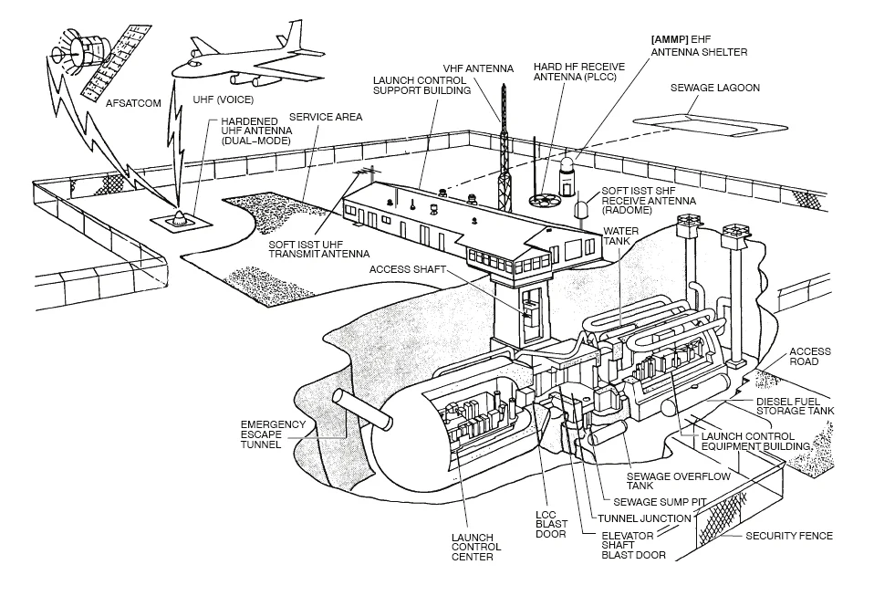
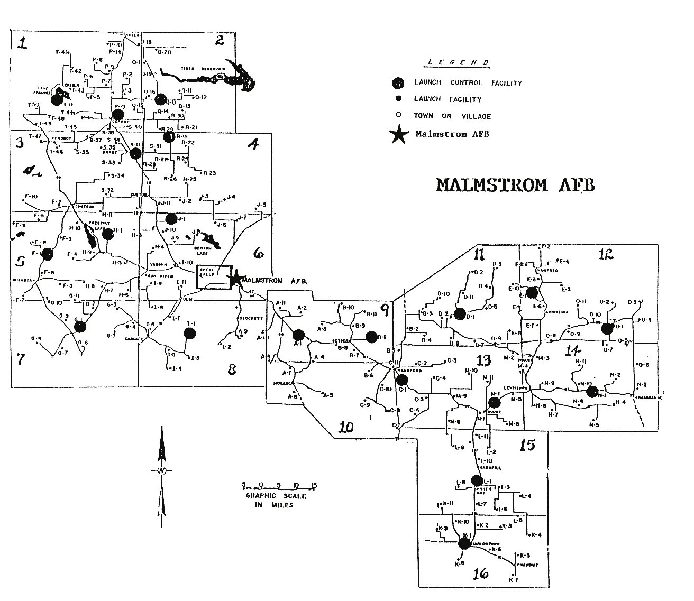
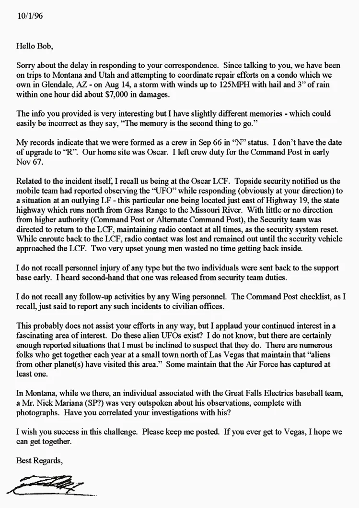

Examine les nombreux décalages entre les confirmations très cohérentes de témoins alléguées par une seule personne et les affirmations très incohérentes présentées par cette même personne sur une longue période. L'étude de cas porte sur un incident au cours duquel des ovnis auraient perturbé l'état de missiles nucléaires dans plusieurs silos et escadrons de la base aérienne de Malmstrom, dans l'État du Montana, aux États-Unis d'Amérique. Ces divergences se sont révélées plus tard le facteur clé prouvant la fausseté des affirmations, car elles ont finalement fourni un motif suffisant pour interroger séparément tous les témoins, une démarche impossible à engager lorsque le cas fut d'abord décrit, en raison de l'anonymat des témoins évoqués. L'anonymat devrait toujours susciter le doute.
Ne sous-estimez jamais le besoin de voir validée sa vision du monde, surtout quand cette validation ne peut réussir qu'en rejetant des faits connus. Malheureusement, quand un cas tend à conforter la vision du monde de ses adeptes, il n'est que rarement examiné avec l'attention qui convient. Dans de tels cas, ce besoin de validation est parfaitement capable d'alimenter la bêtise de masse qui se trouve trop souvent au cœur du mépris que l'on porte aux alternatives raisonnables. Quand cela arrive, le besoin de validation peut devenir une arme aussi efficace que n'importe quel fusil ou grenade. Plus précisément, quand nous ignorons une telle agression, nous le faisons à nos risques et périls. Bienvenue en Amérique : nous écoutons surtout ceux qui ne veulent pas entendre la vérité, et donnons la parole à ceux qui ne veulent pas la dire.
En , Robert Salas et des membres du Computer UFO Network (CUFON) décidèrent de faire pression sur le gouvernement fédéral pour rouvrir et étendre le projet Blue Book, le programme de l'USAF destiné à étudier et traiter ouvertement la question des incursions d'ovnis à l'intérieur des frontières de l'espace aérien américain. Cet objectif est constant chez les partisans des ovnis depuis 50 ans, depuis que Blue Book a pris fin en . Faute d'avoir réussi à étendre les études sur les ovnis au-delà du simple recueil de témoignages avec leurs propres moyens limités, ils se sont persuadés que seul le recours aux ressources de la nation permettrait d'obtenir un quelconque succès. Et le succès, pour ces personnes, exige que le gouvernement des États-Unis admette enfin que les ovnis représentent le contact de l'Amérique avec une ou plusieurs espèces extraterrestres qui visitent la Terre depuis au moins 65 ans, et peut-être depuis toute notre histoire écrite. Tout ce qui serait en deçà, croit-on, ne serait qu'un exemple de plus de mensonges et de secret destinés à cacher cette vérité.
Robert Salas et le CUFON décidèrent que le meilleur moyen d'atteindre cet objectif était de créer un incident ovni si choquant et d'une importance si évidente que le Congrès serait contraint d'ouvrir une véritable enquête, bien financée, sur le phénomène ovni, une enquête qui achèverait ce que l'USAF avait commencé puis prématurément arrêté en mettant fin au projet Blue Book le . Bien que les partisans des ovnis aient souvent critiqué Blue Book, ils furent néanmoins consternés quand les enquêtes cessèrent complètement, pour des raisons qu'ils ont toujours crues fallacieuses et destinées à parachever la dissimulation de la « vérité » derrière les affirmations sur les ovnis Peebles, Curtis: Watch the Skies: A Chronicle of the Flying Saucer Myth, pp 228-230. Berkley Publishing Group, New York, New York, copyright , Smithsonian Institute.
L'histoire qu'ils décident de rendre publique est effrayante. Le , un ovni s'approche du site Echo (Echo Flight), l'une des zones de silos de missiles nucléaires en service à la base de Malmstrom dans le Montana, et, par un moyen inconnu, met hors ligne les dix missiles du système, les retirant de fait pour une courte période de l'emploi stratégique par les forces armées américaines. Cet incident aurait fait l'objet d'une enquête, et aucune cause à l'arrêt des missiles n'aurait pu être découverte http://www.ufoevidence.org/cases/case1017.htm http://www.nicap.org/reports/malmstrom67-2.htm. Toujours selon ces allégations, le mystère serait resté classifié par l'USAF jusqu'à ce que Robert Salas et le CUFON arrivent et obtiennent la déclassification de l'incident du site Echo en , après près de 30 ans. Ils rendirent alors publique, comme il se doit, le « fait » de l'interférence d'un ovni avec les missiles en . Plus tard, ils affirmèrent que la même chose s'était produite au site November à la même date. En , ils déclarèrent que c'était une erreur due à une mauvaise mémoire : le second événement avait en réalité eu lieu au site Oscar. Sept ans plus tard, ils changèrent la date du second événement et affirmèrent qu'il avait eu lieu une semaine après, le . Or les seules défaillances de missiles jamais documentées sont celles survenues au site Echo le , qui représentent aussi la seule défaillance d'une escadrille complète de missiles jamais survenue aux États-Unis. Ils ont pris un événement réel et l'ont chargé d'une paranoïa ovni pour tenter d'effrayer les gens et les amener à exiger de nouvelles études sur les ovnis financées par les ressources nationales http://www.ufoevidence.org/cases/case1017.htm http://www.nicap.org/reports/malmstrom67-2.htm.
Bien entendu, aucune de leurs affirmations n'a jamais été prouvée, et les entretiens menés ensuite avec les témoins censés en avoir confirmé chaque aspect ont aussi prouvé que Robert Salas et le CUFON ont tout simplement menti sur toute l'affaire. Aucun ovni ne fut signalé, et aucun ovni ne fit jamais l'objet d'une enquête en rapport avec les événements du . Les missiles du site Echo tombèrent bien en panne, mais l'incident fit l'objet d'une enquête approfondie pendant plus d'un an, et le problème fut identifié comme électrique, puis résolu, et ne se reproduisit plus jamais après les modifications de maintenance apportées à l'ensemble du système Nalty, Bernard C.: USAF Ballistic Missile Programs 1967-1968, Office of Air Force History, Washington, D.C., . Il n'y eut aucune défaillance de missiles au site November ni au site Oscar : cet « incident » fut une invention complète 341st Strategic Missile Wing and 341st Combat Support Group HQ SAC DXIH 67-1865, Malmstrom AFB, Great Falls, Montana (Command History, Vol. 1), p.32-34, & 38. Pas un seul officier de missiles, à l'exception de Robert Salas, n'a jamais évoqué plus de trois ou quatre missiles en panne au site Oscar en , et ces trois ou quatre défaillances furent rapportées de seconde main par Robert Salas, qui les transforma finalement en 5 ou 6 missiles, puis un an plus tard en 7 ou 8. Il affirma plus tard lui-même que l'escadrille entière de dix missiles était en fait tombée en panne. La personne à qui Robert Salas prête ces affirmations était son propre commandant : le colonel (à la retraite) Frederick Meiwald, commandant au site Oscar. Meiwald, cependant, contacté par des chercheurs, refusa de confirmer les avoir faites, déclarant avec assez d'insistance qu'il ne se souvenait d'aucun incident de ce genre, et encore moins d'un incident qui confirmerait l'affirmation de Robert Salas selon laquelle il aurait eu lieu le Klotz, James and Salas, Robert: Faded Giant.
À un moment ou à un autre, Robert Salas et les membres du CUFON ont dû se convaincre que l'ampleur de la tâche qui les attendait pouvait exiger d'employer les mêmes stratégies malhonnêtes, pour révéler toute la « vérité » sur les ovnis, que celles que les agences à sigles du gouvernement (FBI, CIA, DOD, NSA, USAF, ONI, etc.) auraient employées pour maintenir ce que ces partisans des ovnis considèrent comme un scandaleux secret sur la vérité la plus importante à laquelle l'humanité soit confrontée. Mentir au public ne serait après tout qu'une broutille comparé au bénéfice possible au bout du compte. Salas comme le CUFON ont été très ouverts sur ce en quoi ce « bénéfice » devait finalement consister : (1) rouvrir le projet Blue Book ou son équivalent pour réexaminer la question des ovnis dans l'espace aérien américain, et le doter d'un financement suffisant pour traiter correctement une question si importante et de si grande portée ; (2) rendre publique la « vérité » sur les affirmations passées concernant les ovnis, puisque de toute évidence le gouvernement a établi le contact avec des espèces intelligentes venues d'autres systèmes solaires, galaxies, dimensions ou lieux temporels, et est déterminé à garder secrets ces contacts révolutionnaires et scientifiquement précieux ; et (3) donner l'exemple aux « lanceurs d'alerte » militaires qui souhaitent rendre publiques leurs propres expériences de témoins d'interactions militaires avec le phénomène ovni.

Ces trois aspects des objectifs visés ont trop souvent été servis par les actions déjà entreprises par Robert Salas et les membres du CUFON. L'aspect (1) est un acte politique, et comme tel il exige une solution politique. Pour rouvrir le projet Blue Book ou le remplacer par une étude moderne plus solide et bien financée, il faut prouver que les conclusions de l'étude initiale sont fausses, que ce soit à dessein ou par une évaluation de bonne foi. L'une des principales conclusions du projet Blue Book initial était que les ovnis ne représentent pas une menace réelle pour la sécurité nationale, et que toute étude menée par le département de la Défense des États-Unis est donc inutile. Cela vaut bien sûr aussi pour toute composante du département de la Défense, comme l'US Air Force. Pourquoi utiliser des fonds du Pentagone pour traiter une question qui n'a aucun rapport avec les fonctions du département de la Défense, en particulier un budget en trou noir dont les conditions de clôture sont impossibles à estimer ? Peebles, Curtis: Watch the Skies: A Chronicle of the Flying Saucer Myth, pp 228-230. Berkley Publishing Group, New York, New York, copyright , Smithsonian Institute
Si Robert Salas et le CUFON pouvaient montrer que l'arrêt inattendu d'une escadrille entière de 10 missiles Minuteman à la base de Malmstrom le (un incident bien documenté et indéniable, survenu avant que le projet Blue Book ne soit abandonné par l'USAF comme stérile et inutile) avait en réalité été provoqué par une incursion d'ovni, cela prouverait aussi qu'une menace indéniable pour la sécurité nationale avait bien été causée par un ovni dans l'espace aérien américain. Une telle menace exigerait au minimum une enquête plus poussée, financée par des crédits alloués par le Congrès au département de la Défense. Le Congrès pourrait aisément répondre à une telle demande, compte tenu notamment de la paranoïa inconséquente dont cette assemblée a été victime par le passé. En associant malhonnêtement une présence d'ovni à la défaillance des missiles du site Echo de la base de Malmstrom le , Robert Salas et le CUFON pouvaient facilement satisfaire les conditions évoquées à l'aspect (1) ci-dessus : rouvrir le projet Blue Book et le doter d'un financement suffisant pour traiter la question des incursions d'ovnis comme une menace pour la sécurité nationale. Malheureusement, le site Echo représente les seules défaillances vérifiables de missiles nucléaires ayant été associées à un ovni, honnêtement ou non. Si Salas et le CUFON échouent à étayer leur cas, alors ils auront échoué à prouver toute menace ovni à l'égard des forces de dissuasion nucléaire américaines. Le site Echo est le seul cas de défaillance d'une escadrille complète de missiles nucléaires auquel le département de la Défense ait jamais été confronté.
Les objectifs propres à l'aspect (2) étaient eux aussi aisément servis par les affirmations de Salas et du CUFON : rendre publique la « vérité » sur les affirmations passées concernant les ovnis en tant que phénomènes situés hors des expériences et des connaissances accumulées par les communautés scientifiques du monde. Toute technologie capable d'arrêter une escadrille entière de missiles nucléaires, si importante pour le dispositif de défense nationale des États-Unis, en s'approchant simplement de la région du système opérationnel, semblerait relever de la « magie » et non de la technologie, surtout si aucune enquête ultérieure n'avait pu déterminer la cause des défaillances des missiles, ce qui est précisément ce que Salas et le CUFON affirmaient. De telles affirmations furent bien sûr finalement démontrées fausses au cours d'une enquête très approfondie, entièrement documentée par l'USAF, documentation inexplicablement ignorée par le CUFON et Robert Salas.
Robert Salas a évoqué à de nombreuses reprises, et dans des courriels, l'importance de l'aspect (3) de ses objectifs : donner l'exemple aux « lanceurs d'alerte » militaires qui souhaitent rendre publiques leurs propres expériences de témoins d'interactions militaires avec le phénomène ovni. Il a déclaré ouvertement qu'il voulait montrer aux autres que le département de la Défense n'irait jamais jusqu'à poursuivre des militaires pour avoir parlé ouvertement de ces questions, même hautement classifiées. En rejoignant le projet Disclosure en , il put proclamer cet aspect de ses contributions avec beaucoup plus d'entrain, affirmant être lui-même l'exemple parfait de l'absence de volonté du gouvernement fédéral de poursuivre ceux qui divulguent des documents classifiés dans leur effort pour rendre public le phénomène ovni dans un contexte militaire. Ce que Salas omet cependant de dire, c'est qu'il n'est pas illégal d'« inventer » des informations et de prétendre qu'elles sont des faits. Des informations « inventées » n'ont jamais été classifiées, de sorte que les présenter comme un incident réel peut être immoral, mais n'est certainement pas passible de poursuites, que la loi soit civile ou militaire. En matière de classification de documents et d'incidents, le département de la Défense n'a pas l'habitude de restreindre la discussion d'événements qui ne se sont jamais produits. En fait, les documents de l'USAF que Robert Salas a utilisés à l'appui de ses affirmations se distinguent en ce qu'ils ont classé la seule mention d'ovnis qu'ils contiennent comme entièrement NON CLASSIFIÉE dès le tout début, ce qui rend sans objet la divulgation d'une interférence d'ovni au site Echo. Personne au département de la Défense ne se souciait vraiment de rumeurs d'ovnis. Son utilisation comme exemple de « lanceur d'alerte » militaire est nettement limitée par le fait qu'il n'a encore « lancé l'alerte » sur aucun événement qui se soit réellement produit. Même son affirmation selon laquelle il aurait été essentiel au processus de déclassification de l'incident du site Echo n'est pas tout à fait exacte. Les marquages des documents eux-mêmes montrent clairement qu'ils furent automatiquement déclassifiés en , et non 15 ans plus tard quand Salas et le CUFON en firent simplement la demande au département de la Défense. Salas et le CUFON remplacèrent simplement la page de garde des documents reçus par une autre page de garde, aux marquages de classification moins lisibles. Cette petite tromperie inutile fut cependant facilement remarquée, car les dates des documents étaient également lisibles sur les deux pages de garde, ce qui prouve qu'ils ne sont pas la bande de conspirateurs la plus brillante à avoir tenté de fabriquer un incident ovni.
Ce qui précède représente les principaux objectifs que Robert Salas et le CUFON voulaient atteindre par leur invention d'un incident ovni. Ils n'avaient certainement aucun scrupule moral à faire de fausses affirmations pour atteindre ces objectifs. Tout examen des affirmations avancées ne permet aucune autre conclusion. Dans ce cas, cependant, la tromperie peut être prouvée par le simple examen des affirmations formulées sur une longue période. Les affirmations valides restent normalement cohérentes. Quand il n'y a pas de cohérence, la probabilité d'une tromperie augmente sensiblement.

Quand Robert Salas raconta pour la première fois son « histoire » d'ovni, il déclara
qu'il était le commandant adjoint au site
Echo au moment de l'événement. Cela donnait à ses affirmations sur un ovni arrêtant les missiles du site Echo
une solidité qu'elles n'auraient pas eue s'il avait été honnête sur ses fonctions réelles : il était officier de
missiles au site Oscar, sous le
commandement d'un autre escadron, et n'avait absolument rien à voir avec les événements du site Echo du .
Il affirma ensuite qu'il était en réalité le commandant adjoint au site November, la seule autre escadrille de
missiles mentionnée dans les quatre pages de documentation de l'USAF qu'il
utilisait à l'appui de ses affirmations (il existait plus de 80 pages de documentation de l'USAF relatives à
l'incident du site Echo, mais Salas et le CUFON ignorèrent
délibérément tous les documents qui prouvaient la fausseté de leurs affirmations). Il affirma alors que les missiles
avaient aussi été arrêtés au site November, bien qu'il n'existe absolument aucune preuve qu'un quelconque missile ait
aussi été mis hors ligne au site November (ou ailleurs) le . Il existe une abondante
documentation sur les défaillances des missiles et l'enquête qui suivit au site Echo, mais pas un seul mot à l'appui
d'affirmations de défaillances de missiles au site November. La seule documentation concernant un ovni est une
unique mention, dans l'historique du commandement, de rumors
(rumeurs) d'ovni apparues dans les
semaines suivant les incidents, rumeurs qui se révélèrent fausses. Et pourtant, telles étaient les affirmations de
Salas, et il assurait avoir le soutien de témoins.
Ses trois principaux témoins ne furent pas nommés par Robert Salas pendant les premières années où il fit ces affirmations. Même dans ses courriels privés, il les désignait simplement comme le « commandant » et le « commandant adjoint » du site Echo. Finalement, en l'an , il fut établi que ces deux personnes étaient le capitaine (à la retraite) Eric D. Carlson, commandant au site Echo, et le colonel (à la retraite) Walt Figel, Jr., commandant adjoint au site Echo. Dès le tout début, Robert Salas affirma que les deux officiers avaient « confirmé » toutes ses affirmations (sans compter les trois années de pendant lesquelles il prétendait être le commandant adjoint du site Echo, qui est la version que le CUFON donna à Raymond Fowler dans une lettre personnelle datée du , que Raymond Fowler a très aimablement communiquée à l'auteur). Salas affirma aussi que son propre commandant, le colonel (à la retraite) Frederick Meiwald, commandant au site Oscar, avait lui aussi confirmé toutes ses affirmations.
Malheureusement, il paraît naturellement suspect de devoir changer les détails établis à l'appui d'une affirmation, surtout d'une affirmation déjà stupéfiante, et Robert Salas a dû changer de nombreux détails au fil de nombreuses années. Pire encore, ses affirmations sont toutes très bien documentées et datées, et il changeait habituellement les détails de son histoire à chaque fois qu'il la racontait, et tout cela par écrit ! Après 25 ans de telles absurdités, une vilaine petite flaque de mensonges est tout ce qui lui reste. Mais l'ampleur de la bêtise de ses actes devient le plus manifeste lorsqu'il fait la même assertion à chaque changement : l'histoire qu'il raconte a été confirmée par les trois mêmes personnes. Ce genre d'arrogance maladroite et de mépris du public n'est tout simplement pas possible dans un monde normal et honnête.
Des chercheurs finirent par contacter les trois témoins pour découvrir par eux-mêmes ce qui pouvait exactement être confirmé et ce qui restait indéterminé. Cela sembla nécessairement urgent en , lorsque Robert Salas et Robert Hastings, auteur de UFOs and Nukes, organisèrent une conférence de presse au National Press Club à Washington, DC pour des membres de la presse préalablement confirmés et du personnel du Congrès. Il s'agissait de tenter de rallier des soutiens à la divulgation de documents liés aux ovnis encore classifiés par le département de la Défense des États-Unis. Étant donné que ce tapage public visait avant tout le personnel du Congrès tout en ignorant complètement le pouvoir exécutif, qui pouvait réellement provoquer des changements au sein du département de la Défense, « nécessairement urgent » était peut-être une description un peu trop inquiète d'un facteur de motivation. Le sentiment général, cependant, était qu'une histoire vieille de 43 ans, discutée publiquement depuis 15 ans comme le prolongement paranoïaque des peurs et des idioties sur les ovnis, n'avait jamais été correctement examinée par personne, mais était néanmoins considérée comme l'un des incidents ovni les mieux documentés et les plus crédibles de l'histoire. Elle représentait donc une réalité déformée qu'il était assez difficile d'abandonner comme une simple sornette ordinaire et insignifiante.
Pire encore, sous l'influence de l'auteur Robert Hastings, certains témoins militaires d'ovnis commençaient à se réunir et à modifier leurs histoires juste assez pour en éliminer les différences et contradictions antérieures, rendant ainsi leurs histoires ou leurs expériences à l'appui plus crédibles. Et pourtant, le fait est que, depuis , quand Robert Salas apparut dans la série de télévision par câble Sightings, jusqu'au point presse de à Washington, aucun de ses trois principaux témoins n'est jamais apparu pour confirmer publiquement ses affirmations. Des chercheurs sont donc allés les trouver pour les interroger sur les incohérences si typiques des affirmations de Robert Salas.
Le colonel (à la retraite) Walt Figel, Jr., commandant adjoint au site Echo, aborda la question des incohérences en donnant son appréciation finale de l'affaire en , juste avant le point presse de septembre à Washington, DC :
Bob Salas n'a jamais été associé à aucun arrêt d'aucun missile à aucun moment dans aucune escadrille, et vous pouvez en être certain. Réfléchissez-y une fraction de seconde. C'est une personne obsédée par les ovnis au plus haut degré. Pourtant il ne pouvait pas se rappeler qu'il n'était pas à Echo. Puis il a cru qu'il était à November : encore faux. Puis il a cru qu'il était à Oscar : encore faux. ...
... Il n'existe aucune trace de quoi que ce soit survenu à November ou à Oscar, sauf dans l'esprit de gens défaillants au-delà de l'imaginable. Salas a créé des événements à partir de rien et n'arrive même pas à garder les faits cohérents. Mon meilleur ami à ce jour était à l'époque commandant d'escadrille au 10e SMS (escadron de missiles stratégiques). Lui et moi avons discuté de cette affirmation idiote ces deux dernières années : il pense que ce sont à coup sûr des absurdités inventées de toutes pièces. J'ai mis Salas et Hastings en contact avec lui, et il leur a dit à tous deux qu'aucun incident ne s'est jamais produit à November ni à Oscar. De plus, il a ensuite été affecté à la base de Norton, où les ingénieurs ont testé les problèmes possibles. Aucun petit homme vert n'en était responsable. ...
... J'ai toujours soutenu que je ne crois pas et n'ai jamais cru que les ovnis existent sous quelque forme que ce soit, en quelque lieu et à quelque moment que ce soit. Je n'en ai jamais vu et n'ai jamais signalé en avoir vu. J'ai toujours soutenu qu'ils n'avaient rien à voir avec l'arrêt du site Echo dans le Montana. ...
... Il n'y a pas de « dissimulation » de l'Air Force [des événements de ] ; cela ne s'est simplement pas passé comme Salas a dépeint le déroulement des événements. ... Il s'est fait une carrière de 15 ans à racoler à travers le pays en parlant de choses dont il ne sait rien. Je n'ai pas du tout envie de les affronter, cela ne vaut pas mon effort, j'ai des choses plus importantes à faire dans ma vie. Je préfère de loin rester en dehors de tout ça. [Quelques fautes de frappe mineures n'ont pas été corrigées.] https://web.archive.org/web/20160714033806/http://www.realityuncovered.net/blog/2010/09/the-echo-flight-ufo-debate-continues/
Pendant les nombreuses semaines précédant cette appréciation finale, il avait insisté à plusieurs reprises auprès de l'auteur, dans divers courriels, sur le fait qu'il avait toujours dit à Robert Salas comme à Robert Hastings que les affirmations qu'ils tentaient d'établir étaient fausses. Il n'y avait pas eu d'ovni au site Echo, et il n'y avait pas eu de défaillances de missiles au site November ni au site Oscar https://web.archive.org/web/20101106091259/http://www.realityuncovered.net/blog/2010/09/the-malmstrom-afb-missileufo-incident-part-ii/.
Le colonel (à la retraite) Frederick Meiwald, commandant au site Oscar, a lui aussi affirmé qu'il ne croit pas aux ovnis, un commentaire étrange au vu de l'insistance de Robert Salas à dire qu'un ovni a neutralisé les missiles du site Oscar lors d'un incident au cours duquel un sous-officier fut blessé et dut être évacué du site par hélicoptère. Interrogé par le chercheur Robert Hastings, il déclara sans équivoque ne se souvenir de rien concernant un ovni. En fait, Robert Hastings lui-même a écrit (et publié à la fois sur le site UFO CHRONICLES de Frank Warren, à https://www.theufochronicles.com/, et sur son propre site, comme indiqué dans les notes) :
Meiwald a ensuite précisé qu'il ne pouvait pas soutenir tout ce que Salas a dit de l'incident, parce qu'il se reposait ou dormait quand le premier ou les deux premiers missiles sont passés hors ligne, ce qui s'est produit quelques instants après que Salas eut reçu un rapport du contrôleur de sécurité du site Oscar au sujet d'un ovni planant au-dessus du portail d'entrée de l'installation de contrôle de lancement.
Bien que Salas ait rapidement parlé à Meiwald de cette conversation téléphonique, Meiwald dit ne pas s'en souvenir. https://www.ufohastings.com/articles/echo-flight-ufo-incident-not-unique
Dans un autre entretien mené par Hastings, Meiwald est tout aussi clair :
RH : D'accord. Maintenant, quand Bob, je crois quelques instants [après] qu'il vous a réveillé, ou que vous vous êtes levé et assis à la console du commandant, il avait bien sûr reçu un appel du contrôleur de sécurité de l'escadrille, disant qu'il y avait un objet rouge vif de forme ovale planant au-dessus du portail de la clôture de sécurité ; d'après ce que j'ai compris, c'est ce qu'il vous a dit dès que vous avez été à votre console, qu'il avait reçu cet appel et, euh, que cela a bien sûr coïncidé avec le début du dysfonctionnement des missiles. Vous souvenez-vous qu'il vous l'ait dit ?
FM : Je ne me souviens vraiment pas de cette partie-là, concernant l'objet brillant. Je me souviens d'une situation inhabituelle [mais] quant aux détails, euh, je ne peux pas en dire plus. https://www.ufohastings.com/articles/echo-flight-ufo-incident-not-unique
L'échange suivant est également révélateur :
RH : D'accord. Il a bien sûr dit aussi que vous deux étiez, euh, quand vous êtes rentrés à Malmstrom, vous avez été débriefés par l'OSI et obligés de signer des engagements de confidentialité. Vous en souvenez-vous ?
FM : Je me souviens qu'on m'a ordonné de le faire. Mais cela ne posait aucun problème. Je suis de ces gens qui, quand on leur dit d'oublier quelque chose, l'oublient, à la longue [inaudible].
RH : Bien, alors, est-ce une façon polie de dire que vous ne voulez vraiment pas en parler, même si vous en savez plus que ce que vous dites ?
FM : Non, je dis que je ne me souviens pas. https://www.ufohastings.com/articles/echo-flight-ufo-incident-not-unique
Il serait difficile d'obtenir plus définitif[Note de RR0] La phrase est ainsi interrompue dans
l'original, sans ponctuation avant la suivante. Dans une lettre datée du de Frederick
Meiwald à Robert Salas, Meiwald affirme qu'il n'y a eu aucun débriefing par l'OSI et qu'il n'a pas été obligé de
signer d'engagement de confidentialité au sujet d'ovnis dont il aurait été témoin, contrairement au témoignage de
Salas depuis . Il déclare clairement qu'il n'y a eu aucun suivi de la part du personnel de l'escadre.
Il indique aussi dans cette lettre que ce dont il se souvient est très différent de l'essentiel du témoignage de
Salas. Par exemple, il déclare avoir vérifié ses archives personnelles et pouvoir confirmer que lui et Salas avaient
servi au site Oscar seulement. C'était en , ce qui signifie que Robert Salas continua de prétendre
pendant les trois années suivantes qu'il servait au site November, et que le colonel (à la retraite) Frederick
Meiwald, commandant au site Oscar, avait confirmé toute son histoire. En réalité, Meiwald n'a jamais confirmé les
affirmations de Salas sur les ovnis, jusqu'à ce qu'il confirme prétendument que Salas était very
accurate
(très exact) lors d'une conversation téléphonique avec Robert Hastings en , peu avant sa
mort tragique et malheureuse. Vu le mal que Robert Hastings s'est donné par le passé pour discréditer ou déformer les
déclarations de chaque témoin impliqué dans l'incident du site Echo, il y a lieu de douter
de cette affirmation. Le fait est que la lettre de Meiwald d' affirme que les témoins de la
sécurité de la seule observation d'ovni qu'il ait jamais évoquée avec Hastings et Salas reçurent l'instruction de
signaler l'affaire aux autorités civiles, une instruction qui ne fut jamais appliquée aux témoins militaires avant la
fin du projet Blue Book, le .[Note de RR0] La lettre reproduite ci-dessous ne mentionne ni l'OSI ni des engagements de confidentialité : elle dit I do not recall any follow-up activities by any Wing personnel
(je ne me souviens d'aucune activité
de suivi de la part du personnel de l'escadre). Elle ne dit pas non plus que les deux officiers servirent au site
Oscar seulement : elle dit Our home site was Oscar
(notre site d'attache était Oscar),
après we were formed as a crew in Sep 66 in “N” status
(nous avons été constitués en équipage en
septembre 1966 au statut « N »).
Dans un courriel personnel à Raymond Fowler écrit le , Robert Salas raconte en détail à Fowler qu'il a communiqué avec Meiwald. Ses souvenirs sont extrêmement différents de ce que Meiwald lui a écrit dans sa lettre, mais il faut garder à l'esprit que Salas tenait beaucoup à se faire bien voir de Fowler, croyant que Fowler avait des contacts qui pourraient l'aider à obtenir pour son histoire le soutien qu'elle n'aurait jamais vraiment mérité.
J'ai eu la chance de retrouver l'homme qui était mon MCC (commandant d'équipage de combat de missiles) le jour des incidents. [À ce stade, Salas affirmait encore que les deux incidents de défaillances de missiles s'étaient produits à la même date.] Je lui ai parlé au téléphone, brièvement. Il se souvenait certainement de l'incident dans l'ordre que j'ai exposé, à une exception près. Il pense que nous avons « perdu » quatre LF au lieu de tous. Mais nos souvenirs coïncident sur tous les autres points. Je ne lui ai pas demandé quelle escadrille nous contrôlions, mais c'était probablement November [ce n'était pas le cas : les historiques du commandement établissent qu'en raison des rumeurs d'ovnis apparues dans les semaines suivant l'incident du site Echo, une équipe de maintenance qui était dehors toute la nuit au site November fut interrogée sur les événements survenus, et elle affirma que rien d'anormal ne s'était produit. La seule raison pour laquelle quelqu'un prit la peine de lui parler était qu'il s'agissait de la seule équipe de maintenance à l'extérieur le . Le site November étant la seule autre escadrille mentionnée dans les documents que Salas voulait exploiter, une fois prouvé qu'il n'était pas au site Echo, il décida de prétendre qu'il servait au site November. Les historiques du commandement, cependant, indiquent clairement que rien ne s'est passé au site November le . Ils indiquent aussi qu'aucun autre missile d'aucune autre escadrille ne fut retiré de l'alerte le . Les seuls missiles tombés en panne étaient ceux du site Echo.] Il a aussi ajouté qu'il se souvient d'avoir reçu un appel de l'un des LF où nous avions une patrouille de sécurité itinérante qui avait vu un ovni de très près. Il a dit que ces hommes furent si traumatisés par l'expérience qu'ils ne reprirent jamais leur service de sécurité.Tout le texte des courriels a été fourni à l'auteur par Raymond Fowler en .
Un examen attentif de la lettre écrite par Meiwald établit que Salas n'était pas disposé à donner un récit honnête, même à cette date précoce. Meiwald était incapable de confirmer que le seul incident ovni dont il avait connaissance s'était produit pendant un événement de défaillances de missiles, et son récit prouve qu'il n'était pas en communication avec les membres de la patrouille de sécurité, comme le rapporte Salas. Meiwald reçut toutes les informations de seconde main, ce qui prouve qu'il n'y eut pas d'événement de défaillances de missiles. Si les missiles étaient tombés en panne, Meiwald aurait été responsable de tout le protocole de sécurité et aurait été en communication directe avec les personnes qui signalaient l'ovni. Au lieu de cela, il admet volontiers ne pas avoir eu toutes les informations. Les détails de la lettre concernant les autorités auxquelles les témoins devaient signaler l'ovni suggèrent que l'événement eut en réalité lieu après la fin du projet Blue Book en . Rien dans ce compte rendu ne vaut confirmation des affirmations de Salas. Ce n'est qu'une absurdité de plus que Salas n'a pas pris la peine d'examiner correctement.
Pendant près de dix ans, Salas affirma que soit le capitaine (à la retraite) Eric D.
Carlson, commandant au site Echo, soit le commandant du SAC de service à l'époque, soit quelqu'un d'autre (encore des incohérences,
relevées dans trois versions de l'histoire), avait appelé Meiwald le et lui avait tout raconté
des événements survenus au site Echo. Salas assurait avoir un souvenir très net de cet appel. Interrogé par Hastings,
Meiwald déclara : Whatever happened over at Echo, I have no idea.
(Quoi qu'il se soit passé là-bas
à Echo, je n'en ai aucune idée.) Il a entièrement repoussé toutes les tentatives d'obtenir une confirmation des ovnis
du et du , que Salas a inventés.
Les propres récits incohérents de Salas affirment que Meiwald ne confirmerait que quatre missiles en panne lors du seul événement de défaillances de missiles dont il se serait souvenu, mais ce nombre allait ensuite passer, dans les nouvelles versions de cette « confirmation » par Salas, à 5 ou 6 puis à 7 ou 8 missiles touchés. Salas lui-même affirme se souvenir très bien que l'escadrille entière de dix missiles était passée hors ligne, mais l'incident lui-même n'a jamais été documenté par l'USAF, alors que l'incident du site Echo, une semaine plus tôt, avait été très minutieusement documenté, à la fois dans les échanges de messages et dans les historiques du commandement, de façon constante au cours de l'année suivante. Signaler toute défaillance d'équipement n'était pas seulement une procédure habituelle, c'était une véritable obligation au titre de la politique de l'USAF en matière d'armes nucléaires. Néanmoins, aucun rapport de défaillance d'équipement n'a jamais été découvert pour du matériel de la base de Malmstrom, et encore moins de rapports documentant la défaillance de plusieurs missiles le . Plus important encore, il existe au moins un rapport de synthèse qui affirme très clairement qu'il n'y eut aucune défaillance d'équipement du , date que Robert Salas avance pour son incident du site Oscar, par ailleurs jamais signalé et inexistant.
left crew duty for
the Command Post in early Nov 67 (quitta le service en équipage pour le poste de commandement début novembre
1967), alors qu'il se souvient de l'incident en tant que membre d'équipage sous terre (I recall us
being at the Oscar LCF, je me souviens que nous étions au LCF d'Oscar) : un incident vécu avec Salas en tant
qu'équipage peut difficilement avoir eu lieu en ou plus tard.

Quant à l'ovni qui, selon Salas, aurait arrêté les missiles au site Oscar, Meiwald n'a JAMAIS déclaré que la seule histoire d'ovni qu'il raconta à Salas dans la lettre de mentionnée plus haut avait quoi que ce soit à voir avec des défaillances de missiles ; elle n'a même jamais été évoquée dans ce contexte. Les détails de l'incident que Meiwald évoque dans la lettre suggèrent non seulement que l'incident a peu de chances d'avoir coïncidé avec un événement de défaillances de missiles, mais aussi qu'il est très probablement survenu après le , en raison de mesures qui n'auraient été ordonnées qu'après la fin du projet Blue Book. Meiwald déclare clairement que le personnel avait pour consigne de signaler les observations d'ovnis à l'autorité civile, et non à l'USAF, une procédure standard qui ne fut exigée qu'après l'arrêt du projet Blue Book en , ce qui prouve que l'incident ne pouvait en aucun cas être lié à quoi que ce soit survenu en .
Le capitaine (à la retraite) Eric D. Carlson, commandant au site Echo, a été remarquablement constant au
sujet de l'incident depuis , quand Robert Salas et le CUFON rendirent publiques leurs affirmations. Il a toujours soutenu qu'il
n'y avait pas eu d'ovni coïncidant avec les défaillances de missiles au site Echo. Dans un article de journal publié
à Great Falls, Montana peu avant la diffusion de l'épisode de Sightings
consacré à Robert Salas, il déclare se souvenir d'une vague description of a UFO sighting
(vague
description d'une observation d'ovni), mais de rien de pertinent. Il n'en tint pas compte, car, comme il le dit dans
l'article, UFO sightings were a dime a dozen at that time. It seemed like nearly every security group
squadron saw them some time or other. But I spent a lot of time outdoors in Montana, and I never saw them.
(Les
observations d'ovnis étaient monnaie courante à l'époque. Il semblait que presque chaque escadron du groupe de
sécurité en voyait à un moment ou à un autre. Mais j'ai passé beaucoup de temps dehors dans le Montana, et je n'en ai
jamais vu.)
L'aspect « vague description » fut confirmé plus tard par le commandant adjoint Walt Figel, Jr., qui mentionna que l'un des membres de l'équipe de maintenance envoyée vérifier l'état des missiles avait fait une allusion « pour plaisanter » à un ovni environ deux heures après la défaillance des missiles. Figel déclare que cette remarque relativement désinvolte était à la fois conçue et comprise comme une plaisanterie, ajoutant qu'aucun membre du personnel de maintenance ni de sécurité ne déposa jamais de rapport d'ovni, ce qui était pourtant une obligation au titre des directives de l'USAF dans le monde entier.
Personne n'a jamais cru qu'un ovni était présent à quelque moment que ce soit, si bien que personne n'a jamais signalé officiellement d'ovni, y compris chacun des membres du détachement de sécurité qui tenait le poste de commandement du site Echo en surface. S'il y avait eu un tel signalement, il aurait fait l'objet d'une enquête de l'officier ovni du commandement conformément aux directives de l'USAF, car l'étude Condon sur les ovnis de l'université du Colorado était encore en cours à l'époque (le rapport Condon fut finalement utilisé par l'USAF comme motif pour mettre fin au projet Blue Book le ). Il n'y eut pas d'enquête sur un ovni au site Echo parce qu'il n'y avait pas d'ovni. L'ensemble de l'incident fut automatiquement déclassifié en en vertu d'un protocole de sécurité ordonné à l'origine par le président Kennedy quelques années plus tôt, de sorte qu'il n'y avait aucun risque juridique à divulguer la prétendue activité ovni après . L'examen de toute la documentation prouve qu'il n'y eut aucune interférence d'ovni au site Echo, et aucune défaillance d'une escadrille complète de missiles au site Oscar.
À un moment ou à un autre depuis , Robert Salas a changé presque chaque détail de l'histoire qu'il vend inlassablement depuis (ces changements sont trop nombreux pour être examinés dans ce court article, mais chaque détail des changements introduits par Robert Salas et le CUFON depuis a été soigneusement consigné, avec de nombreuses notes et liens Internet, dans un récit de la longueur d'un livre par l'auteur du présent article) Carlson, James: “Americans, Credulous or The Arrogance of Congenital Liars & Other Character Defects. Establishing the Truth Behind the Echo Flight UFO Incident of March 16, 1967,” .
L'affirmation initiale de Robert Salas était qu'il était le commandant adjoint au site Echo lors de l'incident du . D'après des courriels et des envois par UPS du CUFON à Raymond Fowler, Salas soutenait ces affirmations au sein de la communauté des partisans des ovnis depuis 3 ans. Cette erreur fut relevée presque immédiatement après qu'il eut décidé de publier ses affirmations, si bien qu'il déclara pendant les quelques années suivantes qu'il était le commandant adjoint au site November le , et qu'il avait été informé au téléphone de l'interférence d'ovni avec les missiles du site Echo pendant la défaillance des missiles de son propre poste, provoquée par un ovni (pendant toute cette période de 3 ans, Salas avait en sa possession une lettre de son commandant indiquant qu'il était en réalité au site Oscar, un fait confirmé par son propre dossier personnel). Il aurait facilement pu retirer ses affirmations sur le site Echo et simplement affirmer qu'il s'était trompé et que l'interférence d'ovni ne s'était produite qu'au site Oscar, mais il avait déjà investi trop de crédibilité dans la documentation des défaillances de missiles du site Echo, et avait apparemment décidé qu'il devait conserver les défaillances de missiles du site Echo pour garder cette crédibilité. Il n'y a jamais eu aucune documentation des défaillances qu'il affirme s'être produites au site November, puis au site Oscar. Les historiques du commandement et des unités n'ont jamais consigné un événement tel que celui que lui et Hastings ont proposé, alors que ces archives sont très abondantes pour le site Echo. C'est peut-être pourquoi il insiste tant sur le fait que l'événement ovni qu'il décrit a eu lieu au site Echo aussi bien qu'au site November.
En , pour le débriefing du projet Disclosure, Salas changea à nouveau sa version, déclarant que des incidents identiques s'étaient produits à la fois au site Echo et au site Oscar le , alors qu'il était affecté comme commandant adjoint du site Oscar. Huit ans plus tard, à la suggestion de Robert Hastings, il affirma qu'un ovni avait neutralisé les missiles du site Echo le , et ceux du site Oscar le . Quand ce changement fut introduit, James Klotz et le CUFON retirèrent formellement leur soutien à ces affirmations. Il y avait apparemment une limite qu'ils n'étaient pas prêts à franchir. On soupçonne qu'à un certain point, la malhonnêteté cède la place à la bêtise, et si le CUFON n'avait guère de scrupules à recourir à la malhonnêteté pour servir ses objectifs, la bêtise était une tout autre affaire, une couleur dont il ne tenait pas du tout à être peint.
Salas a affirmé avoir appris que les défaillances de missiles du site Echo avaient été causées par un ovni quand Eric D. Carlson, le commandant du site Echo, avait téléphoné à Frederick Meiwald, le prétendu commandant au site November, pour l'en informer. Il affirma ensuite que c'était Walt Figel, Jr., commandant adjoint au site Echo, qui l'avait appelé. Quand on lui fit remarquer que les escadrilles relevaient de deux escadrons distincts, de sorte qu'aucune communication n'aurait eu lieu entre les deux commandants, il modifia ce détail en déclarant que c'était le commandant du SAC qui avait appelé Meiwald pour lui parler de l'incident du site Echo pendant l'incident en cours au site November, puis plus tard au site Oscar. Quand on lui fit remarquer qu'il n'y avait eu aucune observation ni aucun signalement d'ovni le , Salas changea la date de ses affirmations sur le site Oscar pour le , date à laquelle des ovnis furent effectivement signalés au-dessus ou à proximité de l'espace aérien de la base de Malmstrom. En changeant la date, il changea aussi les conditions de l'avertissement, affirmant que personne ne les avait appelés pour les prévenir d'un ovni au site Echo, parce qu'ils avaient déjà été briefés sur le sujet des ovnis avant leur prise de service. Des doutes avaient cependant bien sûr déjà été semés avant ce changement, car Salas avait établi à plusieurs reprises que son histoire, d'abord au site November puis au site Oscar, s'était déroulée de nuit. Toutes ses affirmations antérieures avaient aussi établi que l'incident s'était d'abord produit au site Echo. Or les missiles du site Echo commencèrent à sortir de l'état d'alerte le , environ deux heures après le lever du soleil. Les détails de l'histoire de Salas, en évolution permanente, ont à maintes reprises transformé ses affirmations en un amas de contradictions et d'idioties, car il change habituellement chaque détail de ses affirmations chaque fois qu'on lui fait remarquer que certains détails de l'histoire ne peuvent pas être vrais, pour une raison ou une autre. Non seulement Salas fut contraint à plusieurs reprises de modifier ses affirmations selon lesquelles lui et Meiwald avaient été informés au téléphone de ce qui se passait au site Echo pendant le prétendu incident du site Oscar, parce qu'il n'arrivait à en établir correctement aucun détail, mais des entretiens ultérieurs menés par Hastings et par Salas avec le colonel (à la retraite) Frederick Meiwald confirmèrent à plusieurs reprises que Meiwald n'avait aucune idée de ce qui s'était passé au site Echo https://www.ufohastings.com/articles/echo-flight-ufo-incident-not-unique.
Il n'y a que deux aspects des affirmations de Robert Salas sur les ovnis qui soient restés inchangés : (1) l'escadrille entière des dix missiles du site Echo a subi l'interférence d'un ovni, et (2) l'assertion de Salas selon laquelle, à travers les nombreux changements apportés à son histoire, chaque détail de ses affirmations a été confirmé à plusieurs reprises par Eric D. Carlson, Walt Figel, Jr. et Frederick C. Meiwald. Salas n'aurait jamais changé un seul point de ses assertions concernant l'aspect (1), l'incident du site Echo, parce qu'il représente la seule défaillance d'une escadrille complète de missiles jamais survenue dans ce pays, et qu'il a été et reste le fondement de tout le livre de mensonges de Robert Salas et du CUFON, utilisé pour attiser la paranoïa et la peur dans tout le pays. Ce fut une tentative triste et malhonnête de susciter un appel public en faveur d'une enquête bien financée sur les ovnis dans l'espace aérien américain. Tout l'enjeu était de prouver que l'étude Condon sur les ovnis, utilisée pour mettre fin au projet Blue Book, mentait en concluant que les ovnis n'avaient jamais été à l'origine d'une menace pour la sécurité nationale. Ils étaient si désespérés d'établir un cas qui convaincrait le Congrès de la nécessité d'un examen plus approfondi et bien financé des ovnis qu'ils se sont précipités dans leur plan sans prendre la peine d'apprendre tout ce qu'ils pouvaient sur l'événement singulier de l'histoire de l'USAF qu'ils voulaient exploiter : l'incident du site Echo.
Quant à l'aspect (2) de ses affirmations, à savoir qu'à travers les nombreux changements qu'il a introduits puis retirés de ses affirmations, trois officiers de missiles de l'USAF (Walt Figel, Jr., Eric D. Carlson et Frederick C. Meiwald) auraient confirmé ses affirmations à plusieurs reprises, il est tout simplement impossible d'imaginer qu'il ait jamais réfléchi à l'histoire qu'il tentait d'établir. L'assertion selon laquelle trois officiers de missiles de l'USAF auraient tous confirmé les détails d'une histoire aussi profondément modifiée que celle de Robert Salas a tout simplement soulevé trop de doutes.
Pourquoi, par exemple, son propre commandant aurait-il informé Salas qu'ils avaient tous deux servi au site Oscar, puis confirmé l'affirmation de Salas selon laquelle ils étaient au site November, pour se raviser à nouveau trois ans plus tard ? Comme tous les autres détails de ces affirmations, cela dépasse l'entendement. En interrogeant ces trois officiers, il est apparu presque immédiatement que non seulement ils n'étaient disposés à confirmer aucun des détails allégués par Robert Salas, mais qu'ils affirmaient aussi avec force que Robert Salas n'avait jamais été impliqué dans un incident de défaillances de missiles, et que les ovnis n'avaient jamais été liés à aucune des défaillances de missiles dont ces hommes avaient été témoins. Il n'y avait pas eu d'ovni au site Echo, et aucun incident de défaillances de missiles, avec ou sans ovnis, ne s'était jamais produit au site November ni au site Oscar. L'histoire était une fiction du début à la fin.
Le capitaine (à la retraite) Eric Carlson a déclaré qu'il était disponible pour être interviewé pour l'épisode de Sightings diffusé en , ce que confirment les courriels de Salas à Raymond Fowler. Le producteur de Sightings, cependant, ne pensa pas qu'il serait utile, et l'équipe refusa de le prendre comme témoin, bien que Salas jugeât impératif d'avoir dans l'émission quelqu'un du site Echo. Carlson croyait encore en qu'on ne lui avait pas demandé de participer à l'émission parce qu'il refusait de confirmer toute présence d'ovni au site Echo. Il dit aussi au producteur de Sightings qu'il n'y avait eu aucune défaillance de missiles au site November, ce qui n'arrangeait pas non plus les choses (Salas allait plus tard retirer ses affirmations sur le site November au profit d'un incident au site Oscar). Dans la section des commentaires du site Reality Uncovered, Eric Carlson nie à nouveau la présence d'un ovni :
À ce jour, personne d'autre que Salas et Hastings ne m'a contacté. Je ne sais pas si Salas ment, s'il a raconté l'histoire tant de fois qu'il y croit, ou s'il y croit sincèrement, mais elle est fausse. Aucun ovni n'a été signalé et le site Oscar n'a pas été arrêté. https://web.archive.org/web/20101106091259/http://www.realityuncovered.net/blog/2010/09/the-malmstrom-afb-missileufo-incident-part-ii/
À la suite de ce commentaire, le capitaine (à la retraite) Eric Carlson fut enfin interviewé par Ryan Dube, un journaliste publié sur de nombreux sites web, dont Reality Uncovered https://web.archive.org/web/20100925040151/http://www.realityuncovered.net/blog/2010/09/an-interview-with-malmstrom-afb-witness-eric-carlson/. Il nia à nouveau toute présence d'ovni, affirmant qu'aucun ovni n'avait été vu, signalé ni n'avait fait l'objet d'une enquête au site Echo à la suite des événements du . Tous les éléments tendent à étayer ses déclarations constantes. Si un ovni avait été vu, ne pas le signaler aurait constitué une violation de plusieurs directives de l'USAF. Pas un seul rapport d'ovni pour le n'a jamais été relevé.
De multiples signalements d'ovnis furent établis pour le . Robert Salas finit par retenir la
date du pour les défaillances de missiles du site Oscar, dont tous les autres témoins
affirment qu'elles ne se sont jamais produites. Il le fit sur la recommandation de Robert Hastings en ,
12 ans après avoir initialement formulé ses affirmations. Un rapport écrit par l'officier ovni de la base de
Malmstrom en , le colonel Lewis D. Chase, confirme qu'il n'y eut aucune
défaillance d'équipement à la base de Malmstrom du . Il fut rédigé en réponse à une
demande de la Foreign Technology Division au sujet
de rumeurs d'ovnis colportées par une personne dans les semaines suivant l'incident du site Echo . Les appels téléphoniques qu'elle avait reçus
affirmaient qu'un ovni avait arrêté les missiles du site Echo le et, étant donné que
l'incident du site Echo avait eu lieu le et que Chase avait minutieusement enquêté sur les
signalements d'ovnis du , comme l'exigeaient les directives de l'USAF, la Foreign Technology Division avait demandé un additif au rapport initial de Chase sur son enquête
concernant les signalements d'ovnis du . Son additif affirmait qu'il n'y avait eu aucune
défaillance d'équipement sur l'ensemble de la base le .[Note de RR0] L'additif publié par
RR0 est daté du et signé par le lieutenant-colonel Chase, chef de la division des
opérations ; il déclare : This office has no knowledge of equipment malfunctions and abnormalities
in equipment during the period of reported UFO sightings
(ce bureau n'a connaissance d'aucune défaillance ni
anomalie d'équipement pendant la période des observations d'ovnis signalées). Le rapport sur les événements du
lui-même, que l'additif mentionne, avait été transmis à la Foreign Technology
Division le . Des courriels ultérieurs de Raymond Fowler établissent une forte probabilité qu'il ait été à l'origine de toutes
les rumeurs d'ovnis qui ont empoisonné l'incident du site Echo, tout cela parce qu'il ne connaissait pas la date de
l'incident réel. Ce suivi des rumeurs d'ovnis a été entièrement documenté par l'auteur Carlson,
James: “Echo
Flights of Fantasy - Anatomy of A UFO Hoax”.
Robert Salas continue d'affirmer ses thèses sur l'interférence d'ovnis avec des missiles nucléaires, tout récemment lors d'un point presse du destiné à attirer l'attention du Congrès. Il continue d'affirmer que ses thèses ont été entièrement confirmées par les officiers de missiles de l'USAF Eric D. Carlson, Walt Figel, Jr. et Frederick Meiwald. Eric Carlson et Frederick Meiwald sont tous deux décédés et ne peuvent plus défendre eux-mêmes la vérité de ce qui s'est passé. C'est typique de Robert Salas, qui affirme aussi que l'officier ovni de la base de Malmstrom Lewis D. Chase a menti à plusieurs reprises dans ses rapports officiels sur les événements du , et ne l'affirme qu'après la mort de Chase, qui ne pouvait plus se défendre.
Salas s'en tient désormais à l'affirmation selon laquelle des ovnis ont perturbé les forces de dissuasion nucléaire du pays le et le , d'abord au site Echo puis au site Oscar. Robert Hastings aurait produit un autre témoin ancien militaire qui dit avoir été de service pendant une défaillance d'une escadrille complète de missiles à la base de Minot, causée par un ovni à la même période. Apparemment, Robert Salas a réussi à persuader d'autres personnes de suivre son exemple.
L'USAF a toujours affirmé, et affirme encore, que la seule défaillance d'une escadrille complète de missiles jamais survenue aux États-Unis a eu lieu au site Echo le . Cet incident fit l'objet d'une enquête complète au cours de l'année suivante, et l'on détermina qu'il avait été causé par une impulsion de bruit aléatoire d'effet semblable à une IEM. Le composant du Minuteman I le plus vulnérable à une impulsion de bruit était le coupleur logique du système de guidage et de contrôle. Des essais ultérieurs montrèrent que la même pièce du Minuteman II était tout aussi sensible à ce même phénomène. À la fin de l'exercice budgétaire , l'ajout d'un blindage électromagnétique avait été intégré aux ordres de maintenance générale. Par la suite, aucun incident de ce type ne se reproduisit. Le problème fit l'objet d'une enquête puis fut résolu Nalty, Bernard C.: USAF Ballistic Missile Programs 1967-1968, Office of Air Force History, Washington, D.C., .
La documentation militaire représente plus de 80 pages de messages militaires et d'historiques du commandement,
d'unités et d'ICBM qui, dans leur ensemble, détaillent toute l'histoire de
ce qui est arrivé à nos forces nucléaires en . L'auteur a rassemblé tous ces documents et les a
publiés dans un récit de la longueur d'un livre Carlson, James: “Americans, Credulous or The
Arrogance of Congenital Liars & Other Character Defects. Establishing the Truth Behind the Echo Flight UFO Incident
of March 16, 1967,” . Le capitaine (à la retraite) Eric D. Carlson a bien résumé toute l'affaire dans un courriel à son fils, James Carlson, déclarant : Robert Salas is either lying or delusional. There
was no UFO at Echo Flight. There were no missile failures at November Flight or Oscar Flight.
(Robert Salas
ment ou délire. Il n'y a pas eu d'ovni au site Echo. Il n'y a pas eu de défaillances de missiles au site November ni
au site Oscar.)
(Déclaration finale : le capitaine Eric D. Carlson s'est éteint paisiblement en à l'âge de 84 ans. C'était mon père. Tout ce que j'ai écrit au sujet de l'incident du site Echo a été préalablement vérifié par lui. J'ai soutenu ses affirmations depuis le tout début, et toutes mes recherches ultérieures les étayent. Tous les témoins de cet événement singulier de l'histoire de l'USAF ont affirmé qu'il était scrupuleusement honnête en toutes choses. S'il n'avait pas de connaissance directe permettant d'enrichir un témoignage sur quelque sujet que ce soit, il ne disait rien du tout. Il n'a jamais cherché à attaquer ceux qui n'étaient pas d'accord avec ses conclusions, et la seule raison pour laquelle il a pris la peine de parler du site Echo est qu'un journaliste de Great Falls, Montana et le producteur de la série Sightings de la chaîne SyFy l'ont interrogé à ce sujet. Il refusait d'aborder la question à moins qu'on ne l'interroge directement. Il pensait que le mensonge était le recours des lâches, et il jugeait cette pratique digne seulement de dédain et de mépris. C'était l'un des hommes les plus profondément civilisés que j'aie jamais connus.)
(Tous les articles web consultés le .)